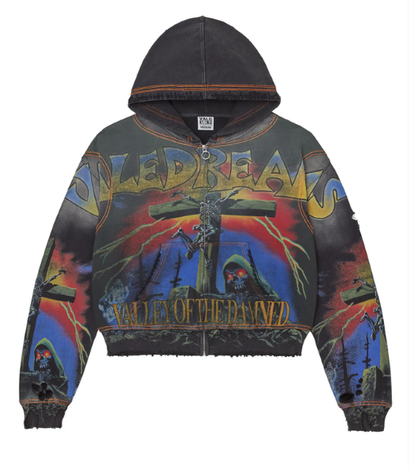

Accidentally buying an inauthentic clothing item is the reason a lot of people are afraid to buy from anywhere except official retailers. However, legit checking gets easier the more you know.
Here of some things to look out for.
- Figure out specific legit markings in each brand. Some examples are finding out what the real tags look like or making sure the gold Bape logo is scratch resistant.
- Look at stitching. Each brand will have different standards when it comes to stitching.
- Check out the materials. If the brand usually has more weight to it, and what you got feels light and flimsy, it's probabaly fake.
- Use legit checking applications. There are a few where people will check if your item is legit by pictures you upload.
- Websites like Goat, Stockx, and Ebay(if it says authenticity guarantee) do legit checking for you. This should always be paired with you checking yourself though because some things can be missed.
- Buy from reputable sellers with good ratings.
- When buying from auctions, if it seems to good to be true, it probably is. If a seller is auctioning many high value pieces one after another everyday, they are probably fake. A legit show will usually pull some decent but common items such as a lot of Fear of God Essentials, or Alo, and will usually hype everyone up to run rarer or more expensive items like Bape or Godspeed. Some streams do random pulls of high value items, but that will not be everyday for hours at a time.
